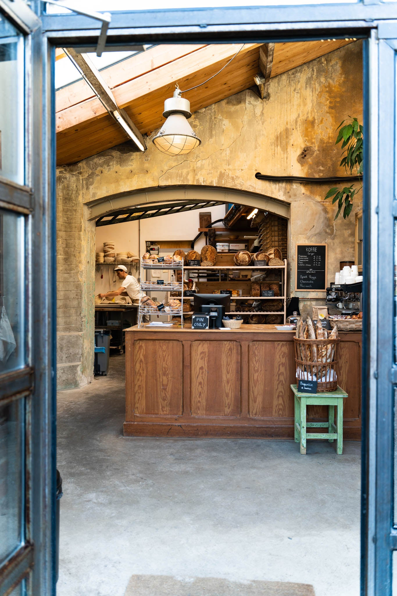
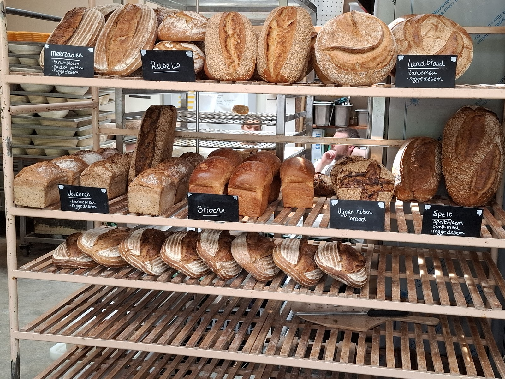
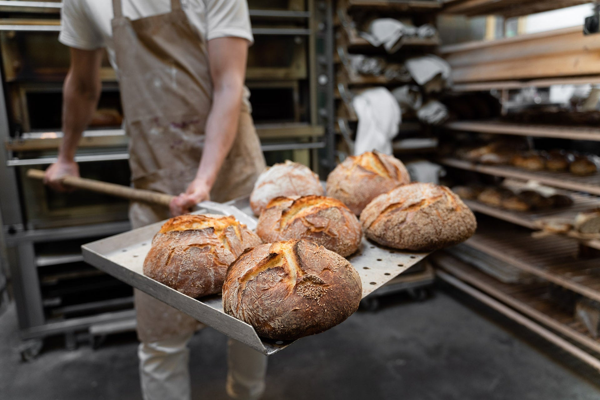
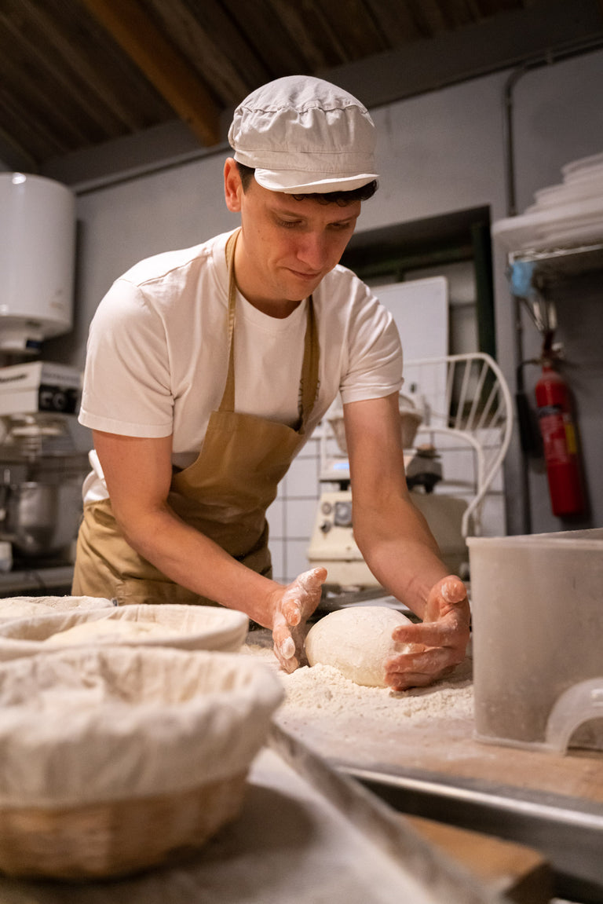
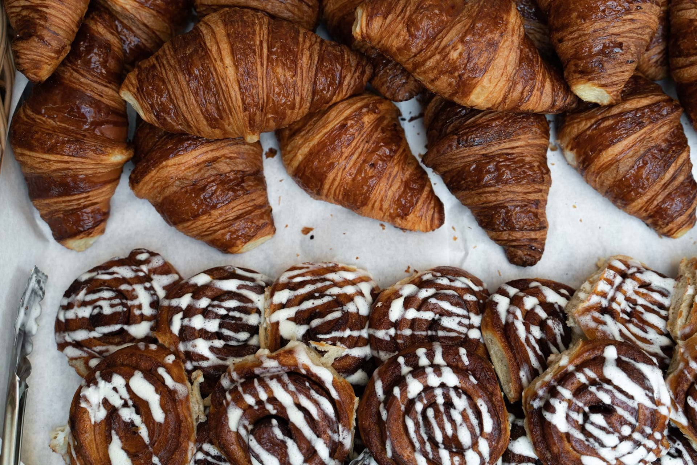
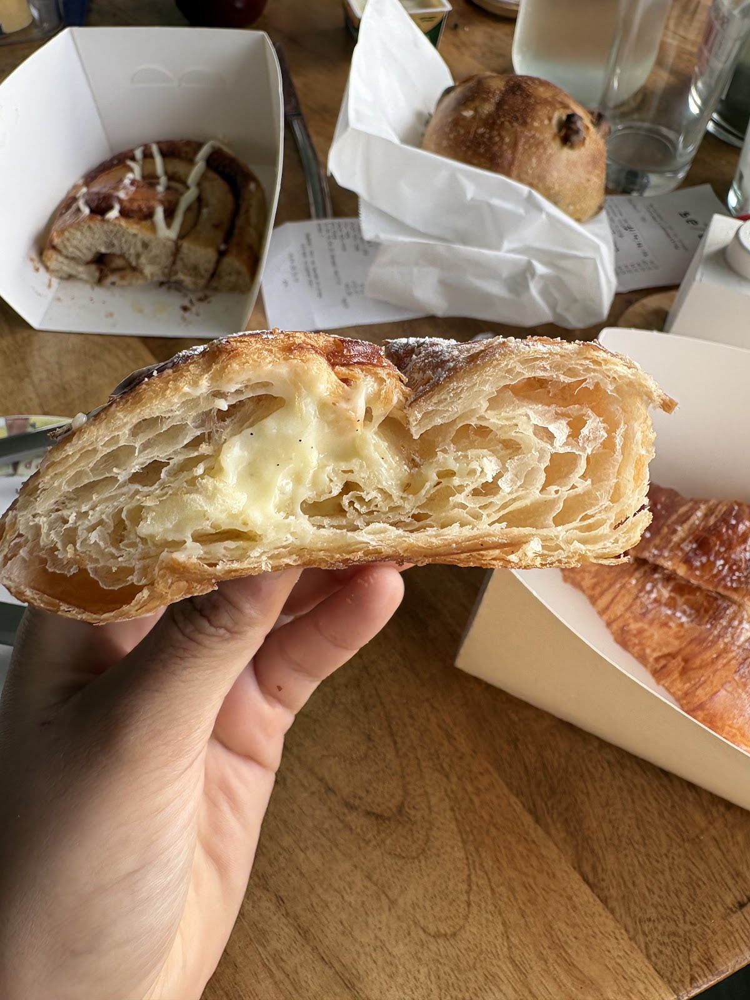
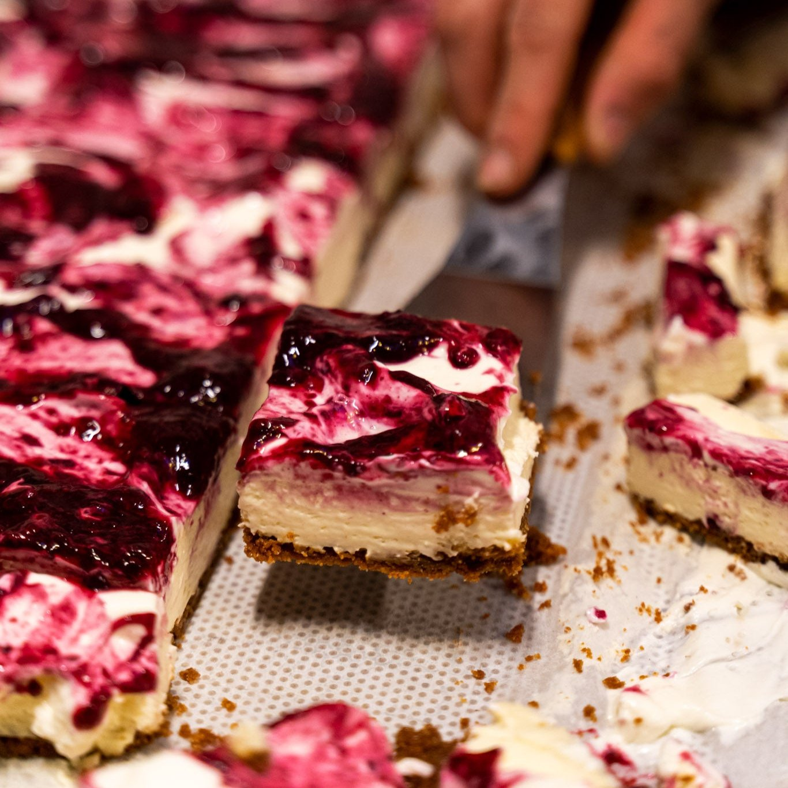
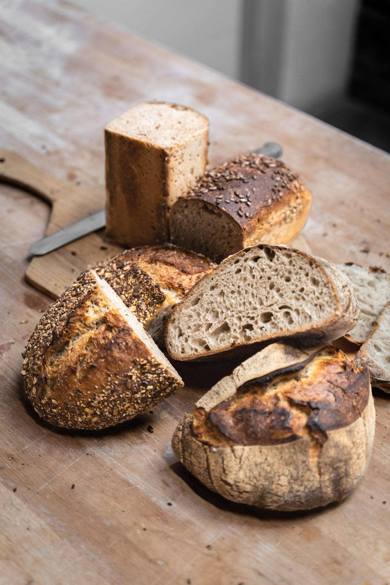
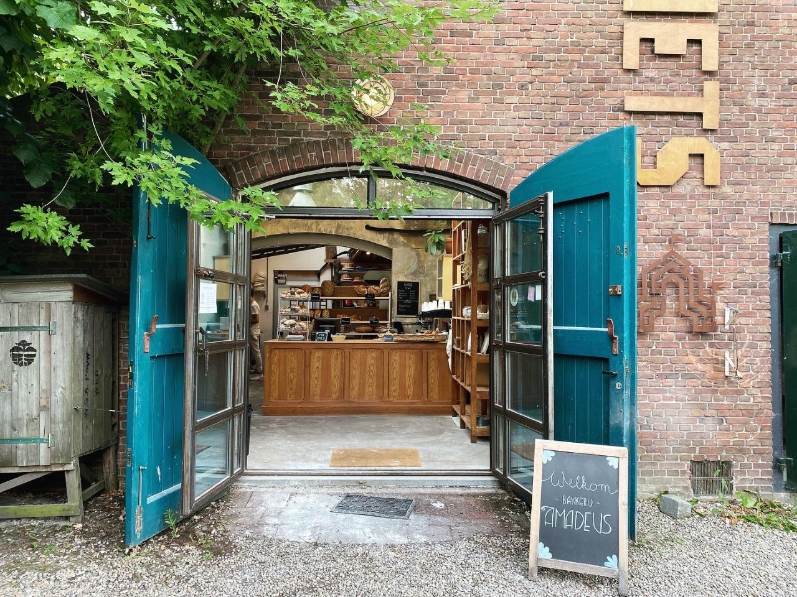

Zuurdesembakkerij in Leidsche Rijn, Utrecht
Gezond brood met een vleugje Mozart.
De eerste artisanale zuurdesembakkerij in Leidsche Rijn en Vleuten-De Meern. Een klein assortiment, uit onze bakkerij in de Metaal Kathedraal.
4,9 uit 210 Google-reviews

Dinsdag t/m vrijdag 08:30 tot 15:30 / Zaterdag 08:30 tot 14:00 / Zondag en maandag dicht
Rijksstraatweg 20, Utrecht
Wat ligt er vandaag?
Wij houden van eenvoudige broden en een klein assortiment. Een deel ligt er elke dag, de rest bakken we op vaste dagen.

Elke dag
- Frans landbroodvanaf € 5,50
- Meerzadenbroodvanaf € 5,50
- Baguette tradition€ 2,85
- Focaccia€ 3,00
- Ciabatta€ 1,40
- Meerzadenbol€ 1,25
- Rozijnenbol€ 1,50
- Luxe croissant€ 2,25
- Kaneelbroodje€ 3,00
- Haverkoek€ 2,30
- Granola€ 4,75
Het brood in de winkel kan er altijd iets anders uitzien dan op de foto.
Alleen op deze dagen
Dinsdag vandaag
Olijvenbrood, Amadeus volkoren met zaden en pitten, Amadeus volkoren met rozijnen
Woensdag vandaag
Amadeus volkoren, spelt-roggebrood, vijgenbrood, vijgenbol
Donderdag vandaag
Amadeus volkoren, spelt-roggebrood, pain au choc, pizzabodem (klaar vanaf 10 uur)
Vrijdag vandaag
Amadeus volkoren, speltbrood, pain au choc, olijvenbrood, pompoenbrood
Zaterdag vandaag
Amadeus volkoren, speltbrood, pain au choc, vijgenbrood, vijgenbol, rusello, brioche, briochebol
Liever vooraf bestellen? Alles staat in onze webwinkel.
Bestel online

Wat erin zit, staat op het leitje.
Ons landbrood: tarwemeel en roggedesem. Ons speltbrood: speltbloem, speltmeel en roggedesem. Een klein assortiment op zuurdesem, en we houden het graag eenvoudig.
Onze kleine bakkerij zit midden in de Metaal Kathedraal. Je kijkt vanaf buiten zo de keuken in.
En dan iets zoets erbij.
Croissants met laagjes waar je doorheen kijkt, kaneelbroodjes met een flinke streep glazuur. En op het krijtbord naast de koffie staan ook specials, zoals cheesecake.
Pain au choc op donderdag, vrijdag en zaterdag. Briochebollen op zaterdag.



Leren bakken bij Amadeus.
Bak zelf een middag mee in onze bakkerij. Onze bakker neemt je mee door het hele proces, van deeg tot een heerlijk, ambachtelijk brood. In een cursusmiddag van minimaal 5 uur maak je onder andere het landbrood, de baguette tradition en focaccia.
- Duur
- min. 5 uur
- Prijs
- € 200
De cursus is op dit moment uitverkocht. Wil je weten wanneer er weer plek is? Mail of bel ons gerust.

Wat klanten erover schrijven
4,9 uit 210 reviews op Google
"Hoewel ik dol ben op deze bakkerij, zorgen de kilometerslange rijen er altijd voor dat ik twijfel of ik er wel heen wil. Maar hun brood en gebak zijn echt hemels."
"Heerlijk brood. Mijn masseur Maurice zit een km verderop, dus ga altijd hier ff langs om brood en lekkers te halen."
"Wat een prachtige ontdekking in het groen van Leidserijn! Deze bakkerij combineert de charme van een landelijke omgeving met de kwaliteit van een stadse bakker. De broodjes zijn vers en smaakvol, perfect gebakken met een knapperige korst (...)"
Achter de petrolgroene deuren.
Je vindt ons in de Metaal Kathedraal aan de Rijksstraatweg, in het groen van Leidsche Rijn. Zoek het bord "Bakkerij" boven de deuren. Je kunt er ook buiten zitten.
| Maandag | Gesloten |
|---|---|
| Dinsdag | 08:30 tot 15:30 |
| Woensdag | 08:30 tot 15:30 |
| Donderdag | 08:30 tot 15:30 |
| Vrijdag | 08:30 tot 15:30 |
| Zaterdag | 08:30 tot 14:00 |
| Zondag | Gesloten |
